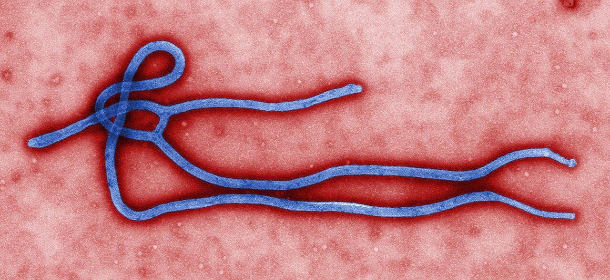

Le Kenya confirme un deuxième cas d'Ebola, trouvé en quarantaine
Un parent de 39 ans du premier patient kényan d'Ebola a été testé positif alors qu'il était en quarantaine, a dit le ministère de la Santé le 14 octobre. Les responsables ont retrouvé 113 des 128 contacts et disent qu'il n'y a aucun signe de propagation dans la population.

Points clés
- Mis à jour à 22:22 UTC, le 23 octobre 2026.
- Mis a jour a 21:09 UTC, le 17 octobre 2026.
- Le Kenya a confirmé un deuxième cas d'Ebola, a dit le ministère de la Santé le mercredi 14 octobre.
Mis à jour à 22:22 UTC, le 23 octobre 2026. Le Kenya a enregistré un deuxième décès dû à Ebola, a déclaré le ministère de la Santé tard vendredi. La patiente était une femme de 65 ans, parente proche du premier patient, décédé plus tôt ce mois-ci. Elle était en quarantaine lorsqu'elle a développé des symptômes le 13 octobre, a été admise le même jour dans une unité de maladies infectieuses, et est décédée tôt vendredi soir, a déclaré le directeur général de la Santé, le Dr Patrick Amoth, dans le communiqué du ministère. Ce décès porte le total à deux morts parmi neuf cas confirmés. Sept patients reçoivent toujours des soins dans deux centres d'isolement. Le ministère a dit que les neuf cas restent liés à un seul groupe de contacts connus, sans preuve de transmission communautaire, et Reuters a rapporté que les autorités ont retracé 135 contacts, tous placés en quarantaine. L'épidémie a commencé en République démocratique du Congo et a maintenant été signalée dans quatre pays, ce qui, selon Reuters, lui donne la plus large expansion géographique de toute épidémie d'Ebola en Afrique à ce jour. La souche est Bundibugyo, pour laquelle il n'existe ni traitement ni vaccin approuvés.
Mis a jour a 21:09 UTC, le 17 octobre 2026. Le Kenya a confirme quatre nouveaux cas d'Ebola samedi, ce qui porte le total a sept, a dit le ministere de la Sante. Trois des nouveaux patients sont des soignants qui ont traite le premier patient, et le quatrieme est un parent masculin de ce patient, qui est mort. Le parent etait en quarantaine depuis le 6 octobre. Les trois soignants, deux hommes et une femme ages de 29, 35 et 32 ans, ont pris en charge le premier patient les 3 et 4 octobre et etaient en quarantaine depuis le 9 octobre. Les quatre nouveaux patients etaient deja en quarantaine lorsqu'ils ont developpe des symptomes et ont ete diagnostiques, a rapporte Reuters. Ces cas sont les premieres infections connues transmises a l'interieur du Kenya. Le ministere a dit que le deuxieme et le troisieme patient confirmes plus tot sont stables et repondent bien aux soins de soutien. Il a dit que 128 des 130 contacts repertories, soit 98,5 pour cent, avaient ete retrouves et places en quarantaine, et que les efforts pour retrouver les deux restants se poursuivaient. Le ministere a dit que le risque pour le grand public reste faible, sans preuve de transmission communautaire, et qu'il n'y a pas de restrictions sur les voyages, le commerce ou les rassemblements publics. Il n'existe pas de vaccin ni de traitement approuve pour la souche Bundibugyo, a rapporte Reuters.
Le Kenya a confirmé un deuxième cas d'Ebola, a dit le ministère de la Santé le mercredi 14 octobre. Le patient est un homme de 39 ans, un proche parent du premier cas du pays, et il était déjà en quarantaine quand il est tombé malade.
Le Kenya compte maintenant deux cas confirmés et un décès. Le ministère a dit que les deux cas sont liés et qu'il n'y a aucune preuve que le virus se soit répandu dans la population en général.
Trouvé en quarantaine
L'homme a présenté de la fièvre, de la fatigue et des douleurs articulaires le mardi 13 octobre, alors que les équipes de santé le contrôlaient chaque jour en quarantaine. Elles l'ont isolé aussitôt et ont prélevé des échantillons. Les tests au Laboratoire national de référence en virologie et au laboratoire CDC de l'Institut kényan de recherche médicale ont tous deux été positifs, a dit le ministère.
Il a été transféré dans un centre de traitement désigné, où il reçoit des soins de soutien. Le directeur général de la santé, Patrick Amoth, a dit que le cas a été détecté tôt parce que l'homme était déjà suivi, et que des soins précoces améliorent ses chances de guérison. Les équipes de santé examinent aussi les personnes qui ont eu un contact avec lui depuis le début de ses symptômes, dont le personnel de quarantaine et les soignants.
Le premier cas
Le premier patient était un Kényan de 40 ans qui avait vécu au Congo, où il avait été malade pendant environ un mois et soigné dans deux établissements de santé. Il a voyagé par la route jusqu'en Ouganda, puis a pris l'avion pour Nairobi le 3 octobre, où un parent l'a conduit à l'hôpital. Il a été testé positif à Ebola le 5 octobre et est mort le même jour.
Ce voyage a soulevé des questions sur les contrôles aux frontières. Le patient est passé du Congo en Ouganda alors que cette frontière est fermée depuis mai, a rapporté Reuters. Le Kenya a depuis renforcé les contrôles aux postes frontières et dans les aéroports.
128 contacts
Au 13 octobre, les responsables de santé avaient identifié 128 contacts du premier patient. Ils en avaient retrouvé 113. Parmi eux, 108 sont en quarantaine au Kenya, avec des contrôles cliniques quotidiens et des prises de température pendant 21 jours à partir de leur dernière exposition possible. Cinq contacts sont hors du Kenya, et les autorités de santé de ces pays ont été informées. La recherche des 15 contacts restants se poursuit.
Le ministère a demandé à la population de rester calme mais vigilante, et de signaler toute maladie suspecte sur sa ligne d'urgence. Il n'a imposé aucune restriction aux voyages, au commerce ou aux rassemblements publics.
L'épidémie plus large
Le Kenya est le quatrième pays à enregistrer un cas lié à l'épidémie d'Ebola au Congo, que Reuters a décrite comme la deuxième plus grande jamais enregistrée. L'épidémie au Congo a été déclarée à la mi mai et elle est causée par la souche Bundibugyo d'Ebola, une souche rare. L'Ouganda a signalé 20 cas et deux décès plus tôt cette année, mais a été déclaré exempt d'Ebola en août. Un médecin rentré en France depuis le Congo en juin a été testé positif, sans autre propagation.
Ebola se transmet par contact direct avec les fluides corporels d'une personne infectée qui est malade ou qui est morte. La maladie peut provoquer fièvre, vomissements et diarrhée, et dans les cas graves des saignements internes et externes.
Chronologie
- Oct 3, 2026Le premier patient atteint d'Ebola au Kenya prend l'avion pour Nairobi après avoir voyagé par la route du Congo vers l'Ouganda, et un proche le conduit en voiture à l'hôpital.
- Oct 5, 2026Le premier patient est testé positif à Ebola et meurt le même jour.
- Oct 13, 2026Un proche de 39 ans en quarantaine développe de la fièvre, de la fatigue et des douleurs articulaires. Il est isolé et testé.
- Oct 14, 2026Le ministère de la Santé confirme le deuxième cas. Les deux tests de laboratoire sont positifs et 108 contacts sont en quarantaine.
- Oct 17, 2026Le ministere de la Sante confirme quatre nouveaux cas, dont trois soignants, ce qui porte le total a sept. Les quatre nouveaux patients etaient deja en quarantaine, et 128 des 130 contacts repertories ont ete retrouves et places en quarantaine.
- Oct 23, 2026Le ministère de la Santé du Kenya signale un deuxième décès dû à Ebola, une parente de 65 ans du premier patient, ce qui porte le total à deux morts parmi neuf cas confirmés. Sept patients restent en isolement, 135 contacts sont en quarantaine, et les responsables ne signalent aucune preuve de transmission communautaire.
Sources
- Reuters: Kenya reports second Ebola case, family member of first patient
- Associated Press via Medical Xpress: Kenya confirms second Ebola case, a relative of first patient
- Kenya Health Ministry statement via Vantage Ke: Ministry of Health Confirms Second Ebola Case in Kenya, 108 Contacts Quarantined
- Reuters: Kenya confirms four new Ebola cases, bringing total number to seven
- AAP: Number of Ebola cases in Kenya rises to seven
- Reuters: Kenya reports second death from Ebola
- The Daily Whistle: Kenya Ebola death toll rises to two as nine cases confirmed (Health Ministry statement)